Session 18 · Mon Nov 9 · Book sections 3.8, 3.9, 3.10
🗺️
| Part | Question | Slides | Notebook |
|---|---|---|---|
| 1 | How do we define, partition, validate and test? | 30 min | 3.8, 25 min |
| 2 | When does combining models help? | 10 min | 3.9, 15 min |
| 3 | What does an automated search need from us? | 10 min | 3.10, 20 min |
| One table to take away | 5 min |
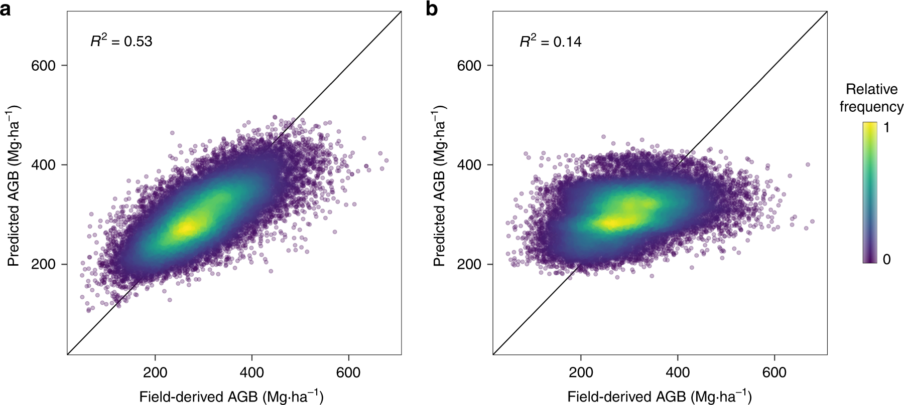
🛰️ Satellite & airborne 🌱 Biosphere 🦠 Biogeosciences
Forest biomass, central Africa. A random forest on satellite and climate layers, scored against field plots. Random 10-fold: R² = 0.53 (a). Whole regions held out: R² = 0.14 (b).
Ploton et al. (2020), Nature Communications 11, 4540, Fig. 4. doi:10.1038/s41467-020-18321-y. CC BY 4.0.
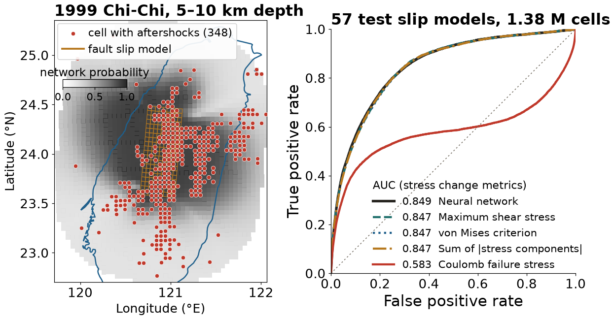
🖥️ Model & simulation 🪨 Solid Earth 📈 Seismology
Aftershock locations, 199 fault slip models. The 2018 paper found that maximum shear stress change explains over 98% of its network’s output. A 2019 comment showed that this one quantity, in a two-parameter model, reaches the same AUC.
Our rerun of the open data and weights of DeVries, Viégas, Wattenberg & Meade (2018), Nature 560, 632–634; comment by Mignan & Broccardo (2019), Nature 574, E1–E3; reply by Meade (2019), Nature 574, E4.
Further reading: Roberts et al. (2017), validation when data share time, space or groups · Meyer & Pebesma (2021), where on a map a model applies.
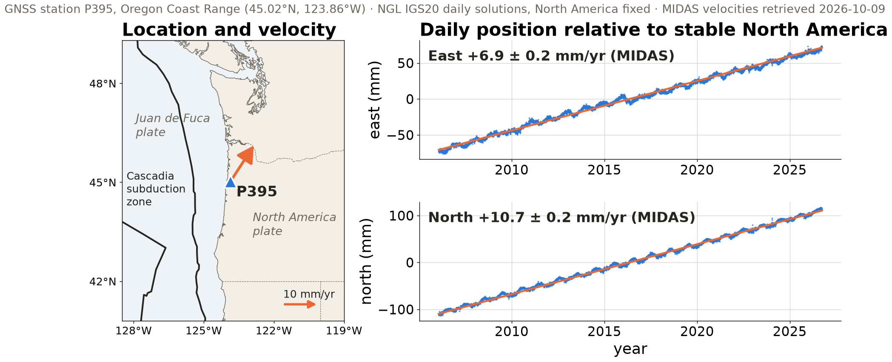
📍 In-situ sensor 🪨 Solid Earth 📐 Geodesy
From 60 days of history, predict the mean position over the next 30 days, one sample every 5 days (1,482 samples, 2006 to 2026).
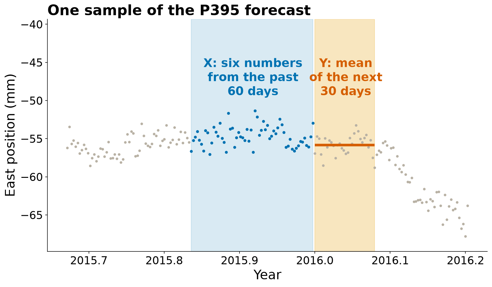
| Today | X, the inputs | Y, the target | One sample |
|---|---|---|---|
| P395 | six numbers from the past 60 days | mean east position, next 30 days | one day, every 5 days |
| Soil map | climate, or latitude and longitude | annual soil moisture | one grid cell |
| Seismic | 61 waveform features | source type, 4 classes | one event at one station |
Lecture 12 named four pieces before any model: one sample, its features X, its target Y, the metric. Write them down for your project now: the split, the score and what counts as new all depend on them.
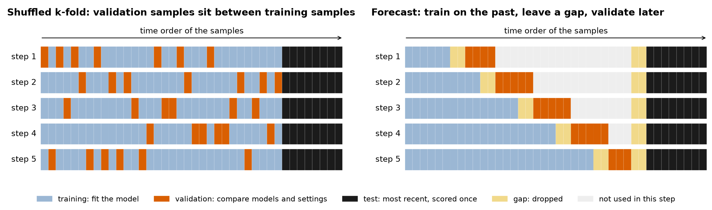
Cross-validation repeats one step k times: train on k − 1 folds, score the held-out fold, move on, until every sample has been validated once. The mean of the k scores compares models. The test window stays aside and is scored once. For a forecast, every split follows time, with a gap so no target window overlaps the next.
| Partition | Drawn from | Used for | How often we look |
|---|---|---|---|
| Training | the domain | fitting the model’s parameters | every fit |
| Validation | the same domain, independent units | choosing models, features, settings such as tree depth; spotting overfitting | many times |
| Test, within domain | the same domain, never used to choose | reporting how well the model interpolates | once |
| Test, out of domain | outside the training domain along a stated axis | reporting how well it generalizes along that axis | once |
Same words elsewhere: a satellite product “validated” against in situ stations, and a hydrological model “validated” on a later period than its calibration, are tests here; so is forecast “verification”. Define the three terms in your report.
Report the within-domain and out-of-domain test scores separately. The best validation score is optimistic: in 3.10, .845 against .820 on the untouched test.
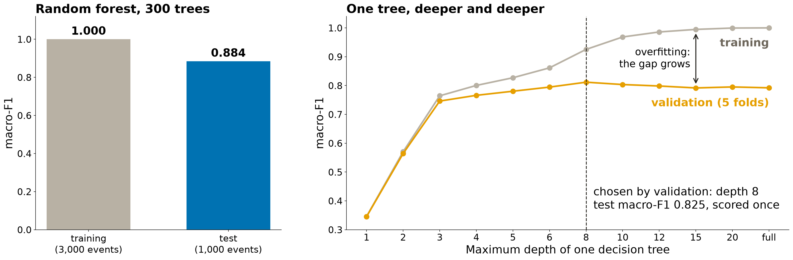
The forest scores 1.000 on its training events and .884 on test events. One tree grown deeper fits training better and better while validation stops improving after depth 8: that widening gap is overfitting. Validation picks the depth; the test scores it once.
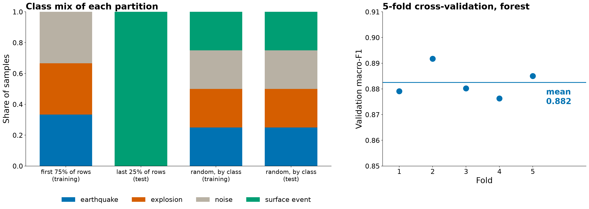
The seismic files are stored class by class. Taking the last 25% of rows as the test set puts all 1,000 surface events in the test and none in training: accuracy 0. Five random folds, stratified by class, give .876 to .892.
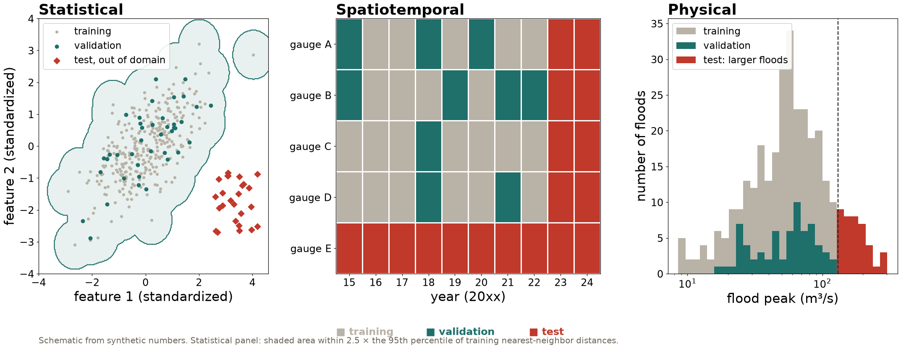
Statistical: inputs far from the training samples (lecture 17’s days above 28 °C). Spatiotemporal: a later period or a new region (P395’s future, the soil map’s 6° blocks). Physical: a process or event size not in training (floods larger than any trained on).
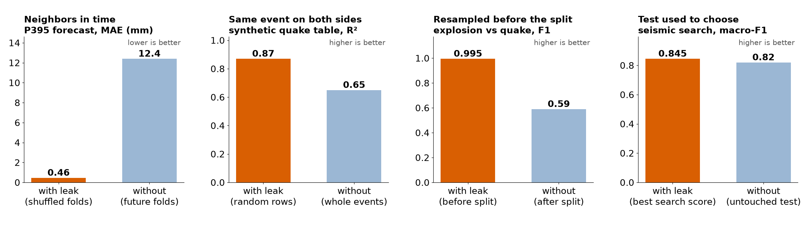
Leakage is any route by which information about the validation or test samples reaches the model while it is trained or chosen. Each pair is the same model and data; only the leak differs.
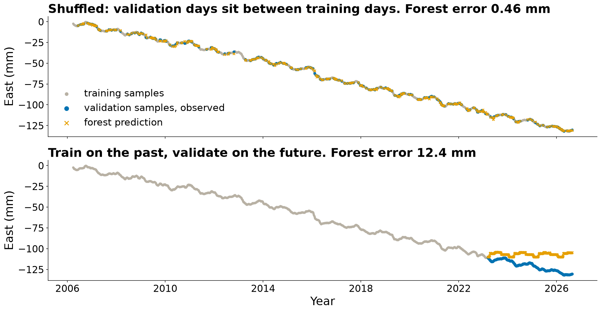
Shuffled folds: 0.46 mm. Training on the past and validating on the future: 12.4 mm. The forest flattens because it cannot predict beyond the values it has seen.
| Future folds | Error (mm) |
|---|---|
| Forest, 100 trees | 12.4 |
| Persistence: same as the last observed day | 1.17 |
| Linear regression, same six features | 0.82 |
| Forest, shuffled folds | 0.46 |
Persistence takes one line and beats the forest tenfold. The shuffled score alone would have ranked the forest first.
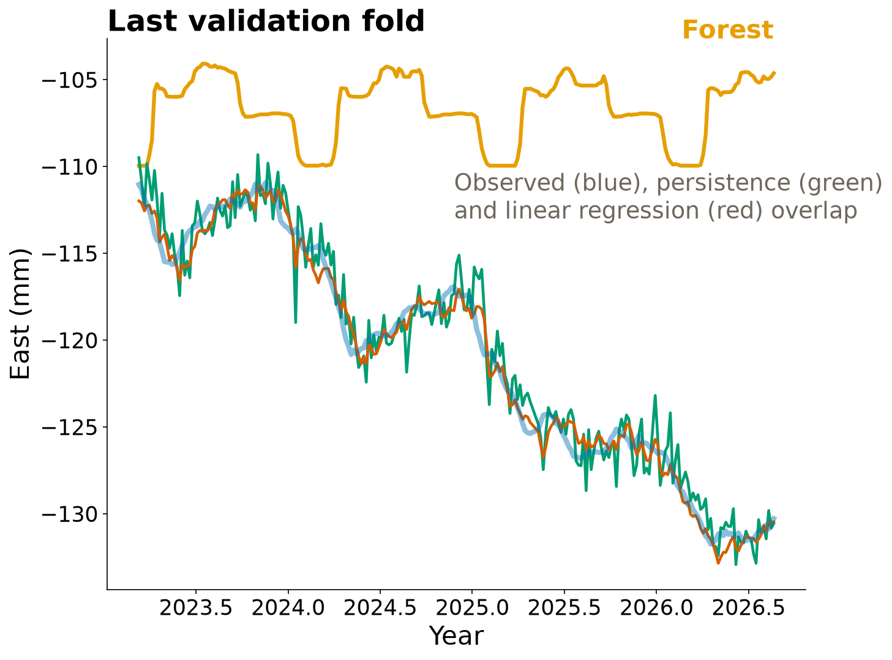
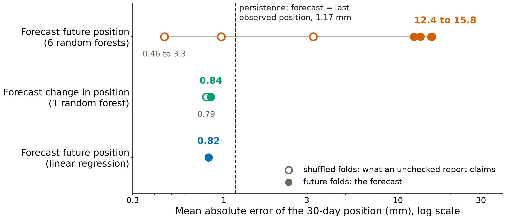
Persistence forecasts the next 30 days as the last observed position, with no learning: 1.17 mm. Six random forests forecasting the future position: 12.4 to 15.8 mm. One random forest forecasting the change in position: 0.84 mm.
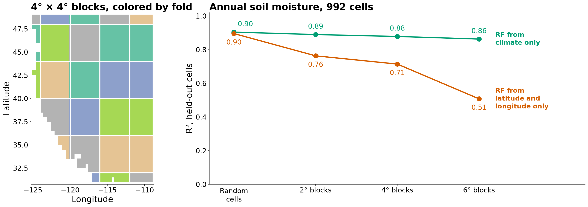
🖥️ Model & simulation 💧 Land water 💧 Hydrology & land-surface modeling
A block is a square of the map, 2°, 4° or 6° on a side. All cells of a block go to the same fold, so each model is scored on a region with no training cells nearby. Two random forests predict annual soil moisture, one from climate only, one from latitude and longitude only. Random cells: R² .90 for both. 6° blocks: .86 from climate, .51 from latitude and longitude.
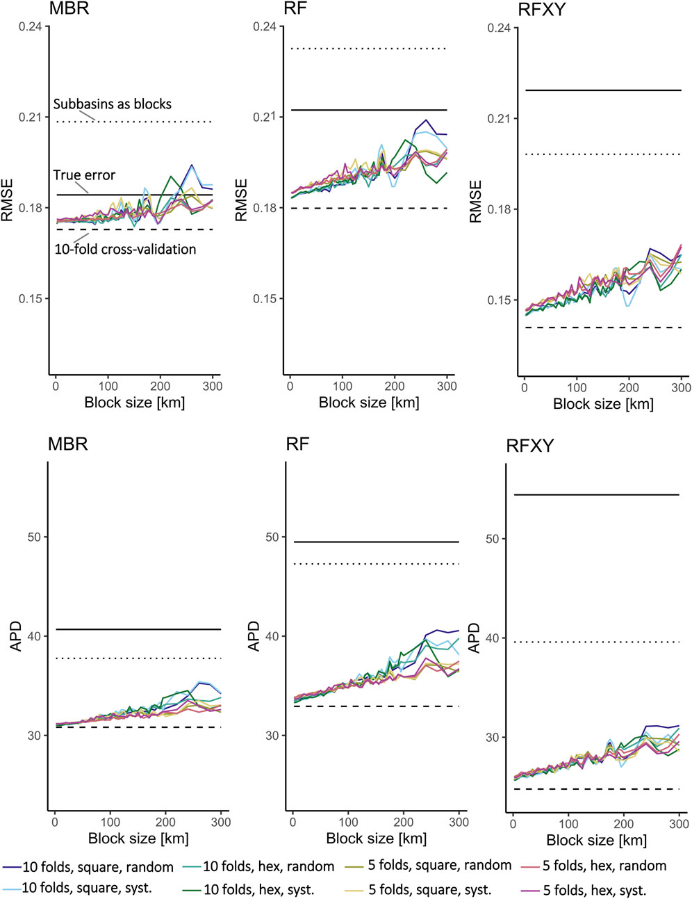
🛰️ Satellite & airborne 🌊 Ocean 🌊 Oceanography
Baltic Sea chlorophyll from satellite reflectance. Synthetic chlorophyll, so the true error is known. Solid: true error; dashed: random 10-fold.
Ask the class
Stock (2025), Front. Remote Sens. 6, 1531097, Fig. 5, doi. CC BY 4.0.
Generalization: error where the model will be used (later days, unsampled regions). Fine tuning: small gains from settings (hyperparameters), same model, features and conditions.
| Choice | Score that looks good | Score on the outcome | Verdict |
|---|---|---|---|
| P395: shuffled folds for a forecast | 0.46 mm | 12.4 mm | Bad: ranks the forest first |
| P395: tune six forest settings | 0.46 to 3.3 mm | 12.4 to 15.8 mm | Fine tuning; none beats persistence (1.17) |
| P395: predict the change, not the position | 0.79 mm | 0.84 mm | Good: 15 times smaller error |
| Soil map: RF from latitude and longitude only | R² .90, random cells | .51, 6° blocks | Bad beyond the sampled region |
| Soil map: RF from climate only, settings picked on random folds | .86 to .90 | picked .863, best .864 | Acceptable for fine tuning |
| Seismic: tune forest settings | macro-F1 .884 | .884, default won | Fine tuning, no gain |
| Seismic: 300 or 1,000 training events instead of 3,000 | .844, .864, .884 | Data mattered more than settings | |
| Seismic: logistic regression, unscaled, 100 iterations | .565, against .884 scaled | Bad: check the fit converged | |
| Seismic: oversample before the split (lecture 16) | F1 .995 | .590 | Bad: leakage |
A choice is bad when it raises the score you report without raising the score where the model will be used. In all three datasets, settings were the smallest lever.
| Samples share | Why they are correlated | Validate by | From today |
|---|---|---|---|
| Time | consecutive samples share weather, season, drift | training on the past, validating on the future | P395: 0.46 to 12.4 mm |
| Location | repeated measurements at one location are near copies | holding out whole locations | |
| Event | one earthquake reaches many instruments | holding out whole events | synthetic: R² .87 to .65 |
| Region | nearby locations lie on one smooth field | holding out blocks as large as the correlation distance | CPC: R² .90 to .51 |
| Rare class and groups | a group can land in a fold with no positives | holding out groups, rare cases spread across folds |
Compare models with cross-validation inside the training data, and score the test set once, at the end.
Report training only as a diagnosis, validation for your choices, and the two test scores separately.
git pull, then open 3.8_robust_training.ipynbReading: 3.8. Each task has a hint and a hidden solution. Part 3 (whole events) is optional.
Forest: independent trees, averaged
Boosting: each tree adds a correction
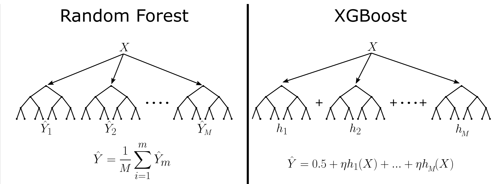
Feigl, Lebiedzinski, Herrnegger and Schulz (2021), Hydrology and Earth System Sciences 25, 2951–2977, Fig. 2, cropped. doi:10.5194/hess-25-2951-2021. CC BY 4.0.
Stacking: a model learns from the models’ forecasts
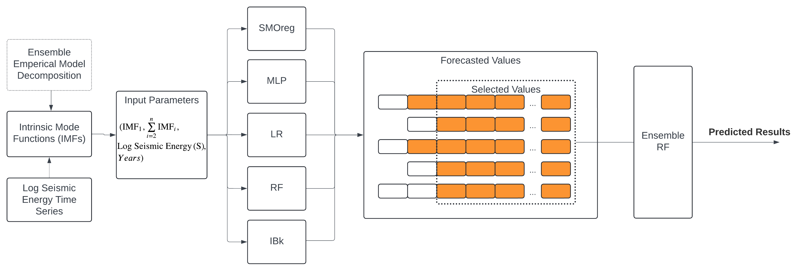
Seismic energy forecasting: five models, then a forest on their forecasts, tested on later years.
Shukla, Dhanya, Kumar, Priyanka and Dutt (2025), Natural Hazards and Earth System Sciences 25, 3713–3736, Fig. 6. doi:10.5194/nhess-25-3713-2025. CC BY 4.0.
Bagging and forests lower variance. Boosting lowers bias, one correction at a time. Stacking must learn from predictions on samples its members did not train on.
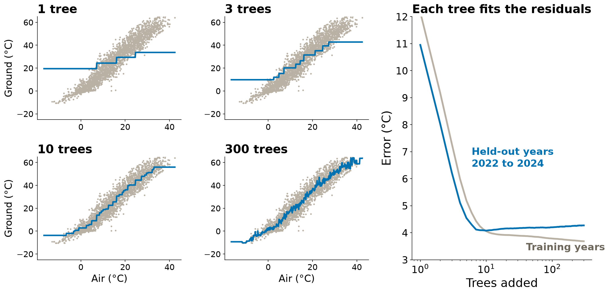
📍 In-situ sensor 💧 Land water 💧 Hydrology & land-surface modeling
Held-out error falls from 15.6 °C at the mean to 4.08 °C with 10 trees, then climbs to 4.27 °C by 300 trees while training error keeps falling.
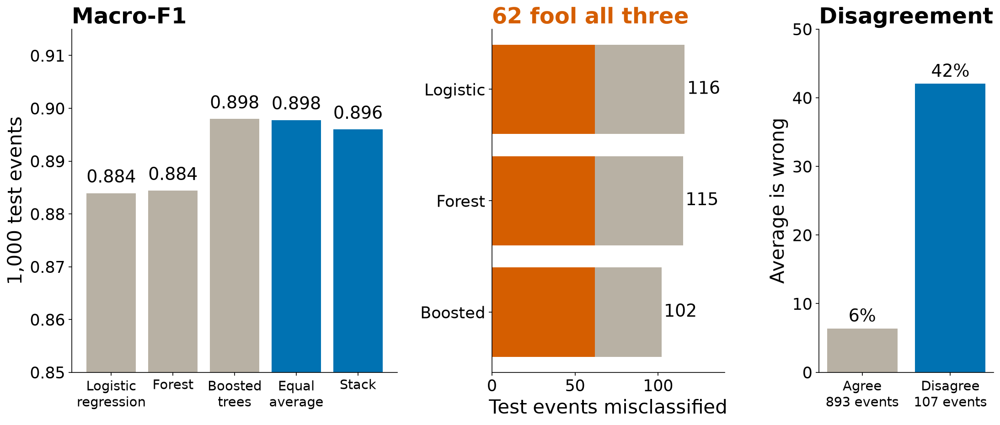
📍 In-situ sensor 🪨 Solid Earth 📈 Seismology
Average and stack match the best member, since 62 of the boosted model’s 102 errors are shared by all three. Where the models disagree, the average is wrong 42% of the time, against 6% where they agree.
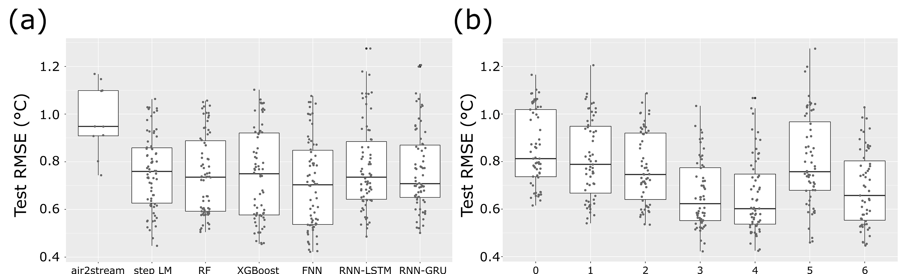
📍 In-situ sensor 💧 Land water 💧 Hydrology & land-surface modeling
Ten Central European catchments, last 20% of each record as test. Model family (a): no significant difference, p = .11. Inputs (b): p < 10⁻¹⁴.
Feigl, Lebiedzinski, Herrnegger and Schulz (2021), Hydrology and Earth System Sciences 25, 2951–2977, Fig. 4, panels a, b. doi:10.5194/hess-25-2951-2021. CC BY 4.0.
Reading: 3.9. The first data cell takes about 10 seconds and the stack about 30. If you run short, skip Part 3.
The argument that decides the result is cv.
| Candidates in 3.10 | |
|---|---|
| Linear models | Linear, Ridge |
| Nearest neighbors | 3, 30 |
| Forests | default, leaf 20 |
| Boosted trees | default, slow |
Tools such as H2O AutoML, AutoGluon and auto-sklearn add to this loop:
They do not know how your model will be used.
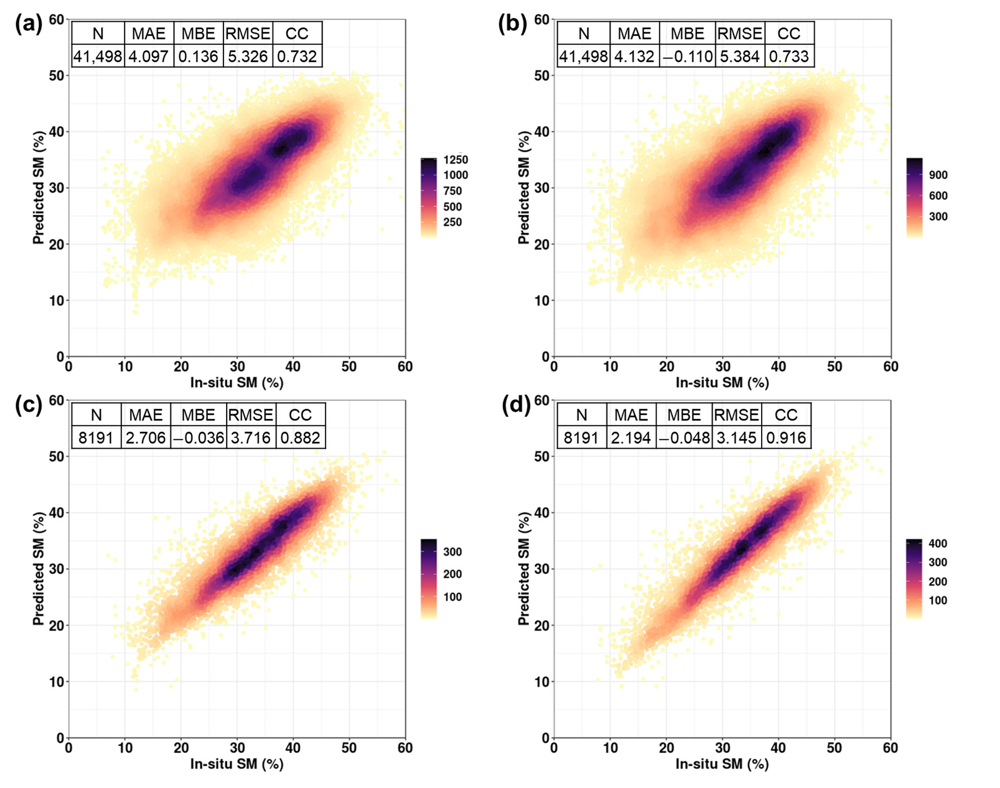
🛰️ Satellite & airborne 💧 Land water 💧 Hydrology & land-surface modeling
Daily soil moisture from satellite, weather model and terrain data, 2014 to 2021, against in-situ stations.
| Mean error (%) | Forest | AutoML |
|---|---|---|
| Random 20% held out | 2.71 | 2.21 |
| Each year held out | 4.10 | 4.13 |
AutoML’s lead disappears when the test is a year it has not seen, and both errors grow by half or more.
Lee, Sohn, Kim, Park, Park and Lee (2023), Remote Sensing 15, 4168, Fig. 8, Tables 4 to 7. doi:10.3390/rs15174168. CC BY 4.0.
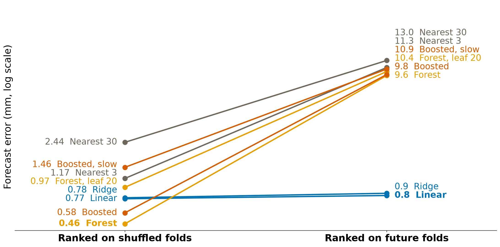
Final test on the last 20% of P395: the winner on shuffled folds errs by 13.4 mm, the winner on future folds by 0.74 mm. Persistence: 1.12 mm.
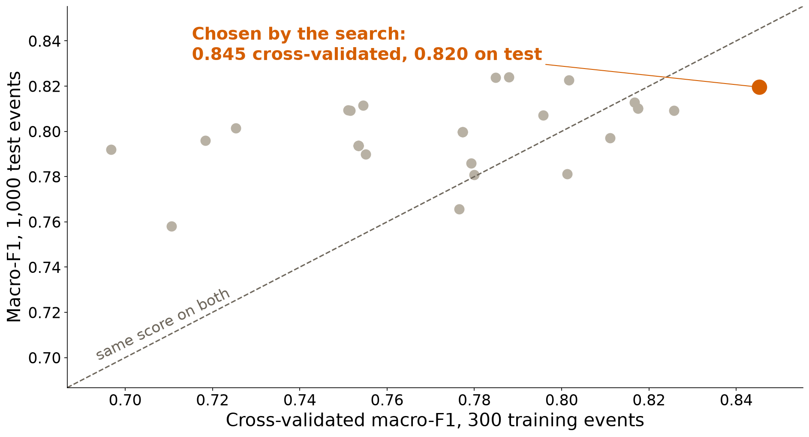
30 random settings on the seismic events: the search’s best is .845 cross-validated and .820 on test. Report the winner’s score on a test set used once.
two_labels = seismic[seismic["source"] != "surface event"] # remove noisy labels
features = StandardScaler().fit_transform(
two_labels.drop(columns=["source", "serial_no"])) # normalize features
a_train, a_test, b_train, b_test = train_test_split(
features, two_labels["source"], test_size=0.25, random_state=7)
for name, model in models.items():
model.fit(a_train, b_train)
score = model.score(a_train, b_train) # evaluate each candidate| Classes | Scored on | Score | |
|---|---|---|---|
| The script prints | 3 of 4 | data it trained on | accuracy 1.000 (forest) |
| Repaired | 4 of 4 | cross-validation, then test once | macro-F1 .871, .888 |
Three flaws. Find them before you open 3.10.
mini_automl, run it twice, then score both winners once on the final testReading: 3.10. Before you run the search, write down which model you expect to win. If you run short, skip Part 2. Ch 3 quiz: Tue to Thu. Friday: evaluating agents (6.3). HW-CML due Fri Nov 20.
| Choice | What it decides | Check | Example today |
|---|---|---|---|
| Split | which question the score answers | keep what samples share on one side | P395: 0.46 mm shuffled, 12.4 mm future |
| Baseline | whether the score means anything | a rule with no learning, in physical units | persistence 1.17 mm |
| Ensemble | whether models can repair each other | do members make different errors? | 62 events fool all three |
| Number of trees | when boosting starts to fit noise | error on held-out data | 4.08 °C at 10 trees, 4.27 °C at 300 |
| Search | which model you ship | score the winner once on a test set | 13.4 mm or 0.74 mm |
ESS 469/569 · Machine Learning in the Geosciences · Autumn 2026